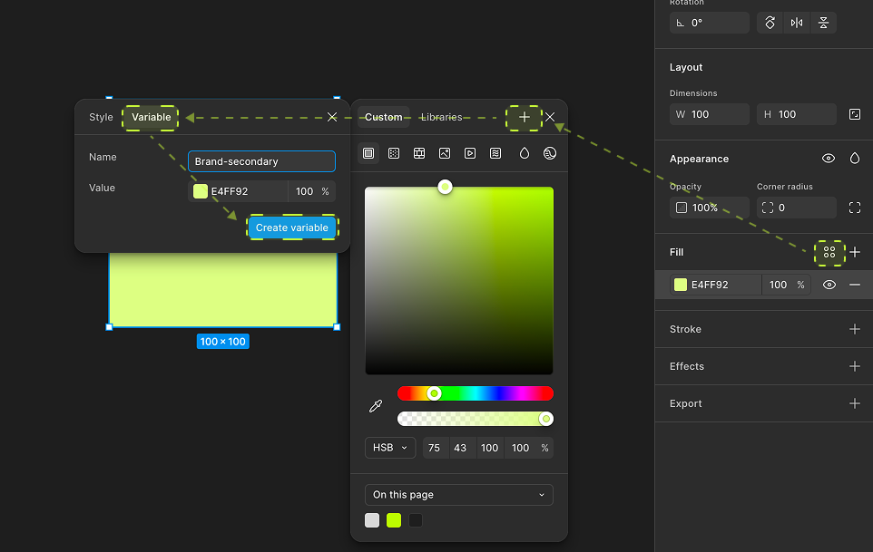
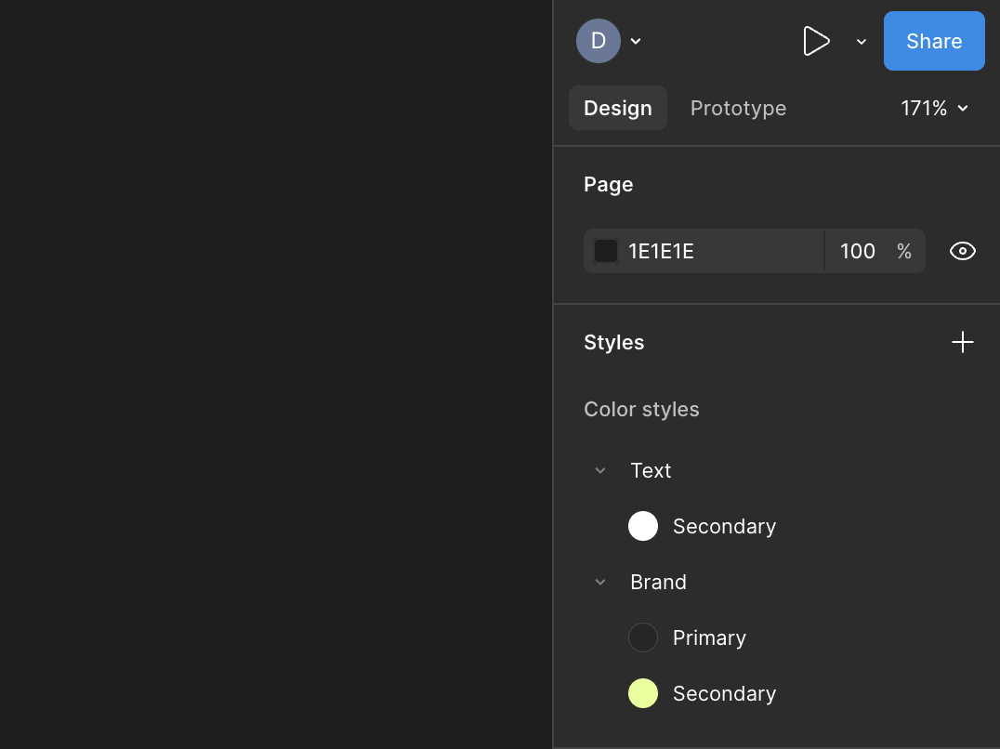
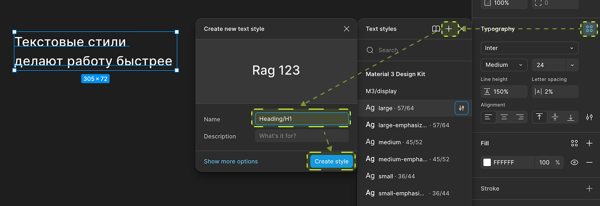
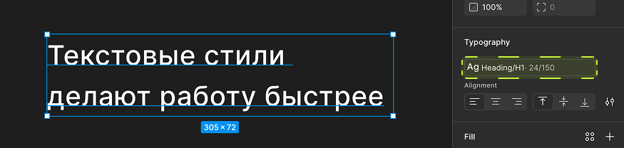
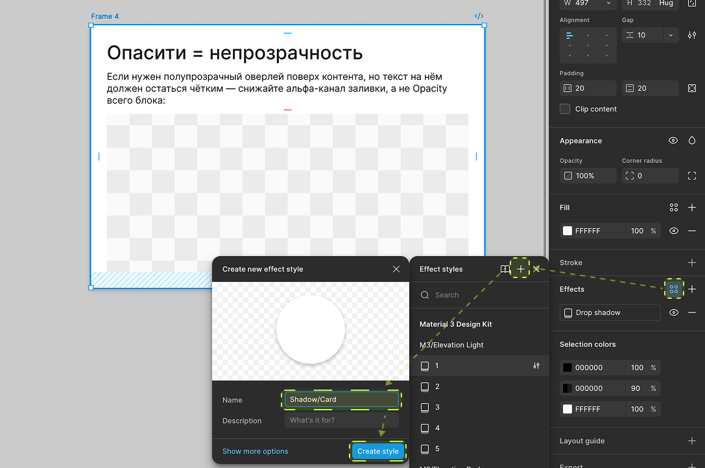
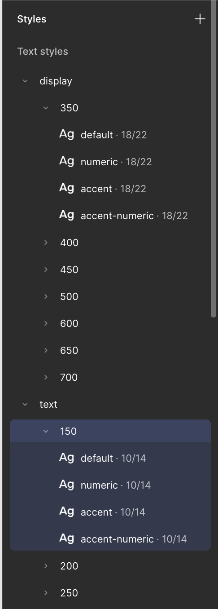
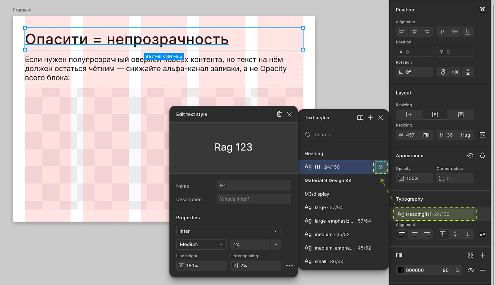
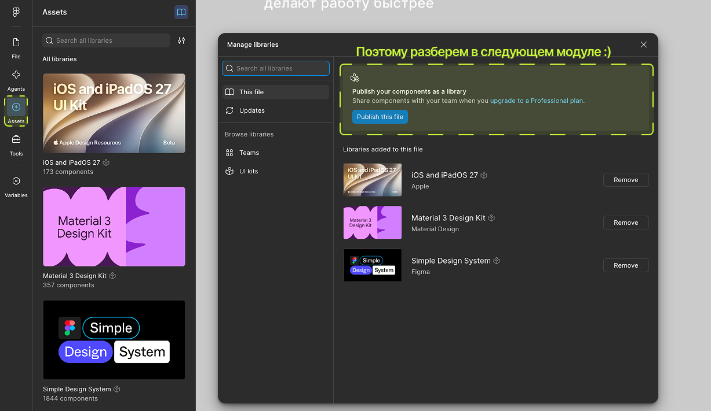

В предыдущих уроках мы вручную настраивали и цвет, и текст. Представьте, что у вас в макете 40 кнопок одного цвета — и бренд решил изменить оттенок. Перекрашивать 40 объектов руками — так себе идея. Для этого в Фигме есть стили — сегодня разбираемся, как ими пользоваться.
План урока
- Зачем нужны стили, если можно просто повторить настройки
- Цветовые стили (Color styles)
- Текстовые стили (Text styles)
- Стили эффектов (Effect styles) и сеток (Grid styles)
- Организация стилей: имена и слэши
- Что происходит при редактировании стиля
- Локальные стили vs общая библиотека
- Итог + домашнее задание
1. Зачем нужны стили, если можно просто повторить настройки
Стиль — это сохранённый набор настроек (цвет, шрифт, тень, сетка), на который можно «подписаться» много раз. Если стиль меняется — меняются все объекты, которые на него подписаны, автоматически, без ручного поиска и замены.
Это тот же принцип, что и стиль абзаца в текстовом редакторе: не выделяете текст и не красите руками каждый раз — применяете стиль «Заголовок 1», а потом одним движением меняете внешний вид всех заголовков 1 сразу.
Инфографика: схема «1 стиль → применён к 5 объектам → изменили стиль → изменились все 5».
2. Цветовые стили (Color styles)

Настроили цвет один раз (например, брендовый лаймовый #E4FF92) → в поле заливки жмём на значок из четырёх кружочков рядом с цветом → Create style → даём осмысленное имя, например Brand-Secondary.
Теперь этот цвет доступен во вкладке стилей у любого объекта в файле (а если это библиотечный файл — во всех файлах команды). Применяется в один клик вместо ручного подбора HEX-кода.
Цветовые стили можно поделить на папки, для этого используйте в названии «/», типа так: Brand/Primary, Text/Secondary, Background/Surface), вот что получится:

3. Текстовые стили (Text styles)

Аналогично с текстом: настроили шрифт, кегль, интерлиньяж, трекинг → сохранили как стиль, например Heading/H1 или Body/Regular. В отличие от цвета, текстовый стиль сохраняет сразу целый набор параметров, а не одно значение — это удобнее и надёжнее ручной настройки.

Хорошая типографическая система обычно укладывается в 6–10 текстовых стилей: пара заголовков, основной текст, подпись, текст кнопки, текст ошибки/подсказки.
4. Стили эффектов (Effect styles) и сеток (Grid styles)

Точно так же можно сохранить в стиль:
- Effect style — тень, блюр, комбинацию эффектов (например,
Shadow/Card— стандартная тень для всех карточек); - Grid style — сетку колонок/рядов/точек (подробно про построение сеток — в следующем уроке).
5. Организация стилей: имена и слэши
Символ слэш / в названии стиля создаёт вложенную папку в списке стилей, об этом я говорила выше. Например:
Text/Heading/H1Text/Heading/H2Text/Body/RegularColor/Brand/PrimaryColor/Text/Secondary
Это превращает плоский список из 40 стилей в удобное дерево с папками. Договоритесь с командой об именовании заранее — переименовывать 40 стилей задним числом гораздо дольше, чем сразу назвать правильно.

6. Что происходит при редактировании стиля

Кликаем правой кнопкой по стилю в списке → Edit style → меняем значение → всё, что подписано на этот стиль, обновляется само, на всех страницах файла (и во всех подключённых файлах, если стиль библиотечный).
Важно: если вы просто вручную перекрасите один объект, подписанный на стиль, — вы не сломаете стиль, но у этого объекта появится пометка «переопределение» (override), и он перестанет автоматически следовать стилю, пока вы не «сбросите» переопределение.
7. Локальные стили vs общая библиотека
Стили, которые вы создаёте в обычном файле, — локальные, видны только внутри этого файла. Если хотите, чтобы стили были доступны во всех файлах команды — их нужно собрать в отдельном файле-библиотеке и опубликовать через Assets → Publish.

Это уже уровень командной работы, мы разберем это в модуле «Платная Фигма», где будем работать с Ui-Kit, для учебных файлов курса достаточно локальных стилей.
📎 Источник: Figma Help — Styles
Итог урока
Сегодня научились сохранять цвет, текст, эффекты и сетку в переиспользуемые стили и организовывать их через слэши. Это то, что превращает набор случайных прямоугольников в настоящую дизайн-систему. Дальше — сетки для вёрстки и автолейаут, без которых ни один интерфейс не соберёшь быстро.
Домашнее задание:
- Создать 3 цветовых стиля и 3 текстовых стиля для своего учебного макета.
- Назвать их с использованием слэшей, разложив по логическим папкам.
- Применить стили к нескольким объектам, затем отредактировать один стиль и убедиться, что изменения применились везде.